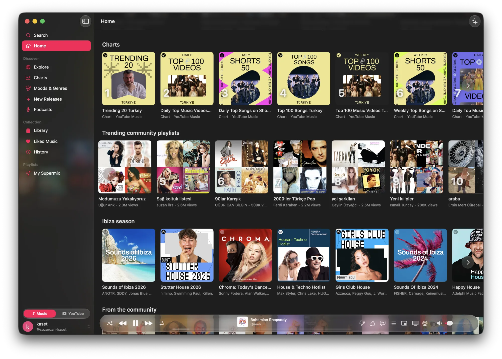
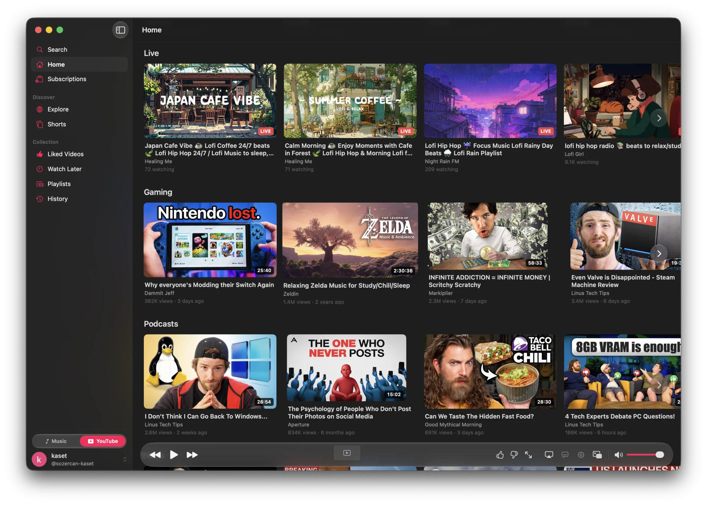

Lyrics that keep time.
Synced lyrics light up line by line as the song plays.
Kaset
YouTube Music on Side A. YouTube on Side B.
A native macOS app for both. Free and open source.
xattr -cr /Applications/Kaset.app
brew install sozercan/repo/kaset
Requires macOS 15.4 or later. Kaset isn't signed with an Apple Developer ID yet. Homebrew clears the quarantine flag for you.


Flip the tape above. The same switch sits at the bottom of Kaset's sidebar.
Side A
Your library, your mixes, your Premium playback. In a real window, with real controls.
Synced lyrics light up line by line as the song plays.
Six bands with presets, applied to the audio output itself.
Reorder what plays next, or let Kaset blend in suggestions based on what's playing.
Side B
Flip the switch and the same sidebar becomes subscriptions, Shorts, Watch Later, and history.
Captions, quality, picture in picture, and AirPlay from Kaset's own Liquid Glass bar.
Load WebKit extensions like uBlock Origin Lite and SponsorBlock. Nothing is bundled. You choose.
Hand a youtube.com or youtu.be link to Kaset, from Shortcuts or open -a Kaset, and it opens on Side B.
Swift, SwiftUI, Liquid Glass, and 18 languages. Kaset shows up everywhere a Mac app should.
Control Center, media keys, the Dock menu, and a mini player. Keeps playing when the window closes.
Full control from the keys. Standard macOS shortcuts are left alone.
On macOS 26, ask for music in plain words and get lyrics explained, on device.
AppleScript for Raycast, Alfred, and Shortcuts.
tell app "Kaset"
playpause
end tell